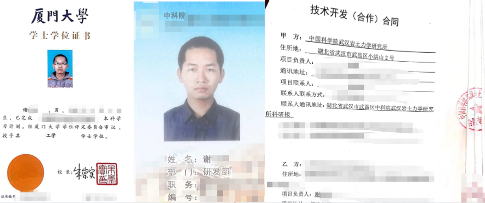
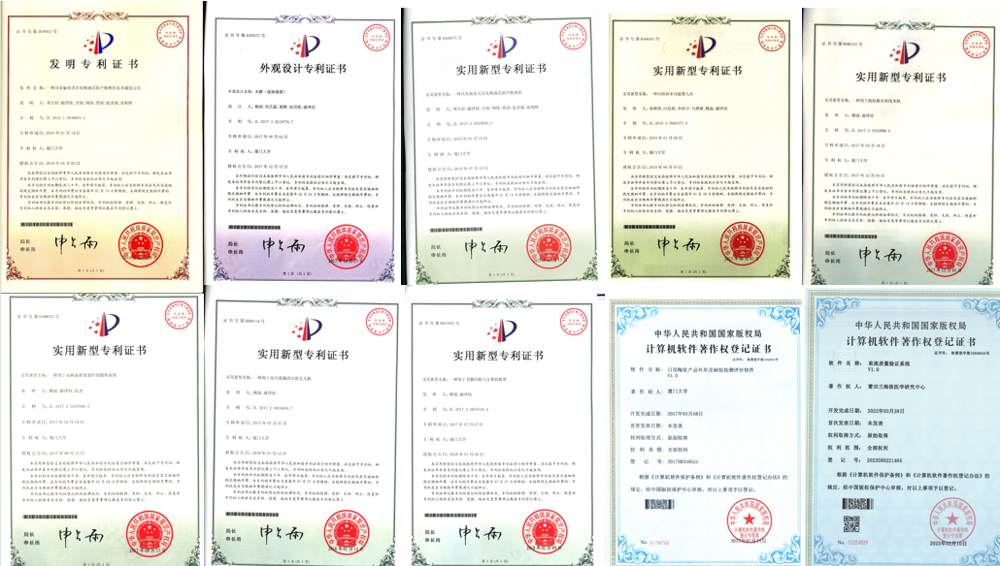

学者，国家重点研发计划技术负责人，院士课题组技术顾问
教学方向：数学、编程
技术方向 : 算法建模、人工智能

经历
2013-2017 厦门大学-航空航天学院
2018-2020 厦门大学-信息学院
2020- 至今 厦门大学-固体表面物理化学国家重点实验室（孙世刚院士课题组）
2021- 至今 中科院XX所-XX研究中心
科研
[1] 国家重点研发计划,三维细观结构的演化定量表征及重建技术
（中科院武汉岩土力学研究所-杨春和院士课题组）
[2] 国家重点研发计划,三维CAD软件评价系统
（浙江大学-计算机辅助设计与图形学国家重点实验室）
项目
[1] 中科院自动化所--票据光学字符识别算法设计
[2] 中科院武汉岩土力学研究所--尾矿细观结构三维数值重构系统
[3] 中科院深圳先进技术研究院--基于SuperGlue网络的医学图像配准技术研究
[4] 中科院近代物理研究所--重离子束流质量验证系统
[5] 厦门大学--原位图像分析系统
[6] 华南理工大学--蛋白质保守序列分析系统
[7] 浙江大学--细胞骨架与肠道细胞转移的数据分析
证书
